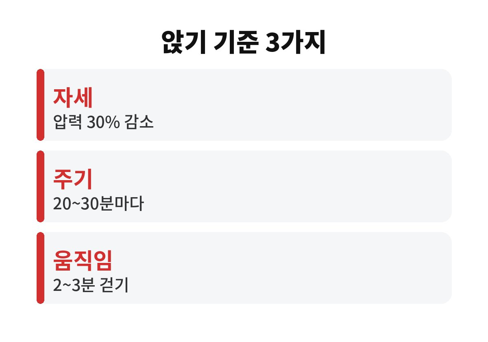
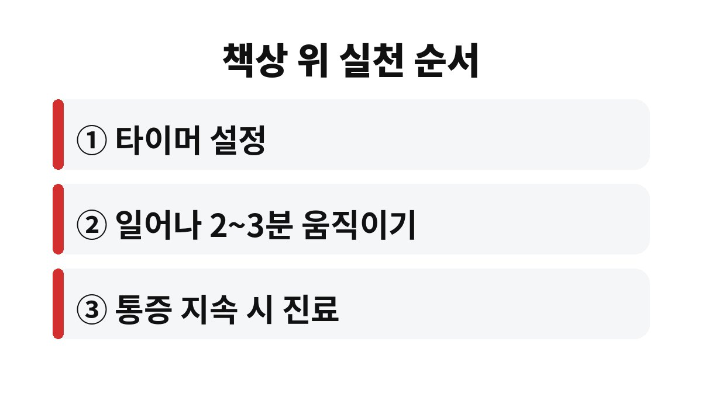

허리 통증을 줄이려면 앉는 자세를 고치는 것만큼 20~30분마다 한 번 일어나 2~3분 움직이는 습관이 필요하다.
대한민국 정책브리핑에 실린 척추 건강 기사(2016년 5월 게재, 원문 하이닥, 척추센터 병원장 도움말)의 수치를 2026년 11월에 다시 읽고 옮겼다.
기사가 오래된 만큼 통계는 당시 기준이라는 점을 함께 적는다.
기사는 바른 자세로 앉기만 해도 척추와 관절에 가해지는 압력을 30% 줄일 수 있다고 설명한다.
그런데 같은 기사가 20~30분마다 일어나 기지개를 켜라고도 권한다.
자세가 좋아도 오래 고정되면 허리는 쉬지 못한다는 뜻으로 읽힌다.
기사는 하중이 허리에 쏠리는 상황으로 무거운 물건을 들거나 허리를 과하게 비트는 동작도 척추 질환을 부르는 경우가 많다고 적었다.
책상 앞에서만 앉아 지내는 사람도 주말에 갑자기 이사 짐을 들다 허리를 삐끗하는 장면이 낯설지 않다.
굳은 관절과 근육에 갑자기 힘을 주면 만성 통증으로 이어지기 쉽다는 설명이 같은 기사에 있다.
기사에 따르면 디스크(추간판)에는 혈관이 없어서 주기적으로 움직여야 산소와 영양분이 공급된다.
그래서 앉아 있는 동안에도 중간중간 몸을 움직여 주라는 설명이 붙는다.
다만 갑자기 심해진 통증은 쉬는 방법이 다를 수 있어 진료에서 확인하는 편이 낫다.
기사는 건강보험심사평가원 통계를 들어 20~30대가 척추질환 환자의 30% 이상이라고 적었다.
잘못된 자세가 젊은 층 허리 통증의 가장 큰 원인으로 꼽혔다.
2016년 통계라 지금 수치와는 다를 수 있다.
아래 표에는 기사에 적힌 숫자만 골라 담았다.
기사에 없는 수치는 넣지 않았다.
표의 PC 사용 4시간은 기사가 점검 신호로 든 기준이다.
사무직이라면 이미 훌쩍 넘기는 수치라 이 기준만으로 걱정할 필요는 없고, 뻐근함이 느껴지는지를 함께 본다.
기사에서 걷기는 장시간 서서 일하는 직장인과 디스크 초기 환자에게 특히 낫다고 소개한 운동이다.
| 항목 | 기사 수치 | 책상에서 해 볼 일 |
|---|---|---|
| 앉은 자세 | 압력 30% 감소 | 엉덩이를 의자 깊숙이 붙인다 |
| 일어나는 주기 | 20~30분마다 | 휴대폰 타이머로 알린다 |
| 움직이는 시간 | 2~3분 | 제자리걸음이나 맨손체조를 한다 |
| PC 사용 경고선 | 하루 4시간 이상 | 뻐근함이 있으면 점검한다 |

일을 마칠 때마다 일어나는 식으로 정해 두면 알림 없이도 이어 갈 수 있다.
메일 한 통을 보내고 나서, 문서 저장을 누르고 나서처럼 기준을 행동에 붙인다.
스마트폰은 고개를 바로 세우고 보되 사용 시간 자체를 줄이라고 기사는 권한다.

간격은 기사가 20~30분 범위로 말했으니 업무 흐름에 맞춰 고르면 된다.
회의 중이라 일어나기 어려운 날에는 앉은 채 자세만 바꾸는 날도 생긴다.
그래도 기사가 권한 것은 일어나는 쪽이라, 가능한 때는 일어난다.
기사는 수면 중 통증이나 저림, 자도 계속되는 피곤함, 무리한 운동 뒤의 갑작스러운 척추 통증을 점검 신호로 꼽았다.
여러 노력에도 통증이 이어지면 전문의 진단을 받으라고 한다.
이 기사에는 응급 신경 증상 설명이 없다.
다리에 힘이 빠지는 것처럼 평소와 다른 증상이 생기면 기사와 상관없이 바로 진료를 받는 쪽이 안전하다.
이 기사는 2016년 것이므로 최신 진료 기준은 진료 때 의사에게 확인한다.
오늘 할 일은 하나다.
휴대폰에 25분 안팎의 반복 알림을 만들어 두고, 울릴 때마다 일어난다.
참고 자료: 대한민국 정책브리핑 「척추건강 지키는 바른 습관 5가지」(2016년 5월 게재, 2026년 11월 확인)
※ 2026년 기준 공식 기준을 바탕으로 정리한 일반 건강 정보이며, 증상이 계속되거나 지병이 있다면 전문의와 상담하길 바란다.